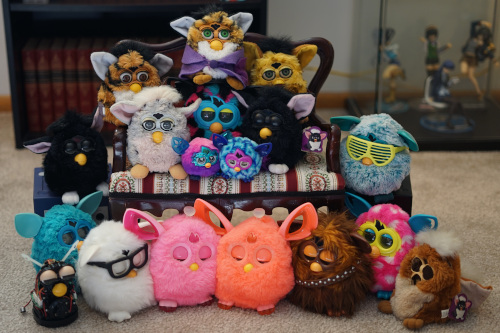

I have so many of these things. I have had to force myself to stop buying every one I see. I have no more room in my home. Please help.
My first furby was a Leopard furby! I have two now and you can only tell them apart because my original furby is a mute.
My aunt bought a furby and didn't like it so she gave it to me and my sister. Another one was found at a thrift store and given to Ryan.
My friend has this furby. I hope he is keeping it safe!
One of these was my sister's original furby. I imagine it was the dirtier one.
The one with green eyes was given to me by my cousins who hated their furby. I had made him a little wizard cloak out of felt. The brown eyed one is likely from a yard sale.
Such a cute color! Unfortunately this furby does not work.
Somehow my mother was able to keep this furby boxed in a house with 2 children. Not sure how.
This furby graduated with honors.
Given to me by a doll friend in 2014 after a doll road trip where my obsession was revealed.
My original Shelby! I've never actually seen more.
My imouto's Shelby!
Found at a yard sale!
When my first furby quit talking, I got a furby baby. I was so unhappy with it that I ended up returning it. I never got another!
I don't own and have never seen one of these in real life. I do own an unopened puzzle though.
This release is so strange. The beak and eyelids appear to degrade on them. I can't help but dream of owning one.
I really wanted "Festive Sweater" but I never ended up getting one! I have official furby cigarettes!!
You bet I fought someone for this furby on black friday 2012 at Walmart! I have the box.
Another furby I got on black friday at Walmart. I have the box for this one.
I think I got this guy for Christmas in 2013 from a good friend. I'm fairly sure I have his box.
A Christmas gift from someone I used to know. I have the box.
Same as above. I have the box.
Found at a Goodwill for $8 on 6/30/2022. Doesn't work ;a;
This release is too cute!! I may be alone in having that opinion. I love them!
My imouto ordered one of these off Amazon for me when they were released. The pink one was unavailable at the time.
Found on clearance at walmart for $25 on 6/2/2017. My heart!